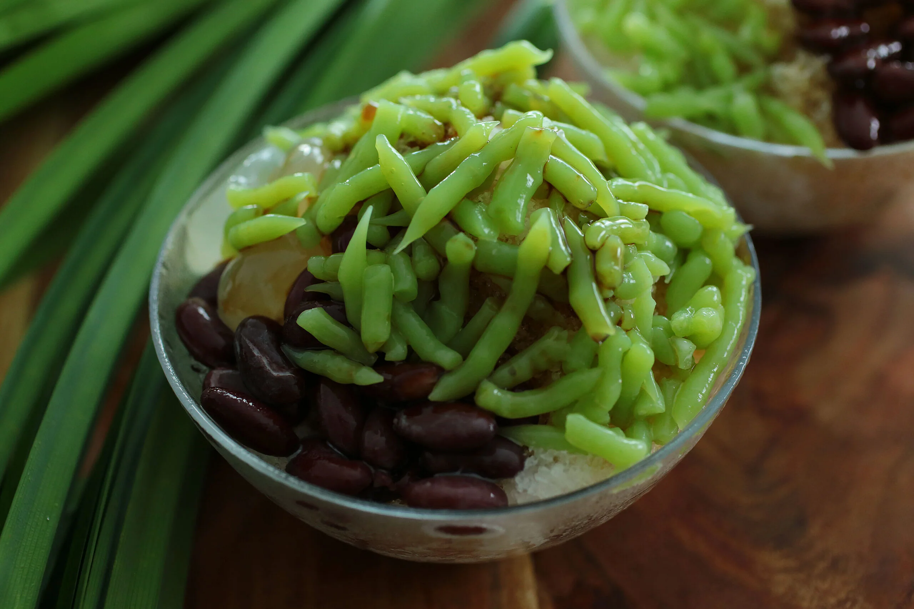

Cendol, also known as lot chong, mont let saung, nom lut, lod song and bánh lọt, is a traditional Southeast Asian dessert characterised by soft, green, worm-like jelly strands made from rice flour or mung bean starch, coconut milk and palm sugar syrup, typically served over shaved ice.